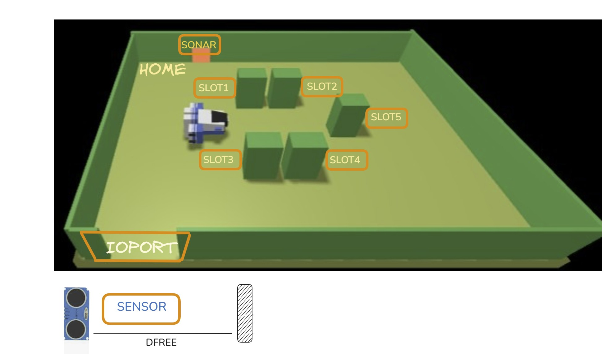

Introduction
Goal: abbattere le ambiguità del testo fornito dal committente, formalizzando il più possibile i termini usati
usando un linguaggio di programmazione e/o un linguaggio di modellazione.
I dettagli originali del progetto si possono trovare
qua.
Per comodità riportiamo il testo originale di seguente.
A
Maritime Cargo shipping company (from now on, simply
company) intends to automate the operations of load of
containers in the ship’s cargo hold (or simply
hold). To this end, the company plans to employ a Differential Drive
Robot (from now, called
cargorobot).
The hold is a rectangular, flat area with an Input/Output port (
IOPort). The area provides 4 slots to store the
containers and a slot named
slot5.

In the picture above:
- The slots1-4 depict the hold areas reserved to store one container each,
- The slots5 depicts an area, where the Cargorobot must temporarily store a container, before to place it in one of
the slots1-4. During temporary storage, a ‘marker’ device labels the container with an identification barcode and
signals when this marking activity is completed.
- The IOPort is a device with a pushbutton and a display. The pushbutton is pressed by the customer in order
to to send a request to load a container on the cargo. The display is used to show the answer to the request and
to show the current state of the hold.
- The sensor associated to the IOPort is a device (a sonar) used to detect the presence of a container, when it
measures a distance D, such that D < DFREE/2, during a reasonable time (e.g. 3 secs).
Requirements
The company asks us to build service named
cargoservice that should work as follows.
The cargoservice is able to receive a request to load a container sent by some customer by using the pushbutton of the
IOPort.
It sends the answer retrylater, if the IOPort is currently occupied by a container or if the system is Out of
service
It rejects the request when the hold is already full, i.e. the slots1-4 are already occupied.
Otherwise, it considers the system as engaged, detects a free slot and returns as answer the name of such a
reserved slot. While engaged, the system must blink a Led.
When the request to load is accepted, the customer must move the container in the sensor area within prefixed amount
of time (e.g. 30 secs), otherwise the systems becomes disengaged. Then, the cargoservice uses the cargorobot to
move the container from the IOPort to the slot5 (for marking the container) and then to the reserved slot.
The service must also show on the display on the IOPort:
- the current state of the hold
- the message ‘Service working’, when it is all is going well
- the message ‘Out of service’ if the sonar sensor measures a distance D > DFREE for at least 3 secs (perhaps a
failure of the sonar).
Requirement analysis
Dal confronto con il committente, abbiamo chiarito e formalizzato le seguenti entità e i seguenti vincoli del sistema:
-
IOPORT: è un’entità che rappresenta il canale di comunicazione tra il sistema esterno e il CargoService. Ha il compito di inoltrare le richieste dell’utente al sistema e di mostrare il feedback con un output visivo.
Include il pushbutton (device di input per inviare richieste, componente reattivo) e il display (device di output per mostrare lo stato del sistema, componente passivo). Il committente ci ha informato che questo componente va sviluppato e viene modellato logicamente come un nodo indipendente che espone un’interfaccia web (WebGUI).
La modelliamo come un Qactor siccome ha una natura proattiva e reattiva :
// richieste del customer
Request load : load(X)
Reply accepted : accepted(SLOT) for load // accettazione
Reply retrylater : retrylater(RetryMessage) for load // rinvio
Reply reject : reject(RejectedMessage) for load // rifiuto
QActor ioportmock context ctxioport {
State s0 initial {
println("ioportmock | stato iniziale")
}
Goto work
State work {
println("ioportmock | (working)...")
request cargoservice -m load : load(100)
}
Transition t0
whenReply accepted -> handleRequest
whenReply retrylater -> handleRetry
whenReply reject -> handleReject
State handleRequest {
println("ioportmock | (handleRequest , accepted)...")
}
Goto work
State handleRetry {
println("ioportmock | (handleRetry , retryLater)...")
}
Goto work
State handleReject {
println("ioportmock | (handleReject , rejected)...")
}
Goto work
}
-
SENSOR:è un dispositivo che ha il compito di rilevare la presenza prolungata di un container, oppure rilevare la presenza di un'anomalia. Per fare questo, il sensore fisico (dispositivo PicoW con sonar) misura la distanza degli oggetti rilevati (D).
Data una distanza DFREE, il Sensor deve:
- Rilevare Container, ovvero deve segnalare la presenza di un container nel momento in cui viene soddisfatta la condizione D < DFREE/2 per un tempo T >= 3 secondi
- Rilevare Guasto, ovvero deve segnalare un guasto quando viene verificata condizione D > DFREE per un tempo T >= 3 secondi
Il Sensor viene formalizzato come un micro-servizio autonomo (Qactor) allocato su un nodo computazionale distinto.
Il sensor riceve i dati grezzi direttamente dall'hardware. Ha il compito di isolare la logica di business dalle caratteristiche fisiche e dai segnali grezzi del mondo reale.
QActor sonar context ctxdev {
State s0 initial {
println("sonar | stato iniziale")
}
Goto work
State work {
println("sonar | working")
}
}
-
HOLD: Rappresenta la mappa fisica in cui sono collocati gli Slot e la IOPORT. Serve al robot per calcolare i percorsi geometrici per evitare collisioni. Gestisce lo stato degli slot. Gli slot di stoccaggio sono 4 (slots 1-4). Lo ‘slot5’ è un’area di transito temporaneo. Per distinguere i diversi slot è necessario un identificativo univoco (ID da 1 a 5). Inoltre è necessario avere un attributo per ottenere la condizione corrente dello slot (occupato o libero).
L’entità HOLD è un componente passivo implementato come un POJO, è da sviluppare. Decidiamo di modellarla come una matrice e ogni cella è rappresentata da un'unità robotica (dimensione del robot). La posizione viene rappresentate tramite le coordinate della cella nella matrice.
-
CARGOROBOT: è l'entità logica attiva che rappresenta il comportamento del Differential Drive Robot (DDR). Modelliamo questa entità come QActor, in quanto permette di offrire un servizio
disaccopiato dalla tecnologia utilizzata e con cui posso interagire.
Il committente fornisce una serie di componenti pre-costruiti per comandare il DDR robot, tra cui:
Abbiamo deciso di usare l'implementazione di RobortSmart26, perchè contiene una rappresentazione della stanza come mappa e fortunatamente è la stessa mappa della hold dei requisiti. Inoltre
questo componente permette di pianificare i movimenti garantendo un certo grado di autonomia al CargoRobot. Tutte queste caratteristiche lo rendono il componente migliore da usare in quanto ci permette maggiormente di colmare l'abstraction gap dell’applicazione.
Il CargoRobot funge da nodo mediatore traducendo i comandi logici di alto livello ricevuti in istruzione comprensibili dal RobortSmart26.
QActor cargorobot context ctxrobot {
State s0 initial {
println("cargorobot | stato iniziale")
}
Goto work
State work {
println("cargorobot | (working)...")
}
}
-
CARGOSERVICE: è il nodo orchestratore del sistema, implementa la logica di business del sistema e dirige il CargoRobot (lo rappresentiamo come un attore).
Il core business del sistema è l'automatizzazione delle operazioni di carico del container nella hold della nave. Implementa le logiche di accettazione, rifiuto, transizione degli stati operativo/guasto e coordinamento del movimento del robot.
// richieste del customer
Request load : load(X)
Reply accepted : accepted(SLOT) for load // accettazione
Reply retrylater : retrylater(RetryMessage) for load // rinvio
Reply reject : reject(RejectedMessage) for load // rifiuto
// per il sonar
Dispatch distance : distance(X)
Context ctxcargoservice ip [ host="localhost" port=8020 ]
QActor cargoservice context ctxcargoservice {
[#
var NSlotsOccupied = 0
var IsEngaged = false
#]
State s0 initial {
println("cargoservice | stato iniziale")
}
Goto working
State working {
println("cargoservice | (working)...")
}
Transition t0
whenRequest load -> handleRequest
State handleRequest {
println("cargoservice | handleRequest ")
if [# IsEngaged #] { //il sistema sta già gestendo una richiesta di carico
replyTo load with retrylater : retrylater("engaged")
}
else
{ if[# NSlotsOccupied == 4 #] { //tutti gli slot sono occupati
replyTo load with reject : reject("hold_full")
}
else {
[#
NSlotsOccupied++
IsEngaged = true
#]
replyTo load with accepted : accepted($NSlotsOccupied)
}
}
}
Goto engaged if [# IsEngaged #] else working
State engaged {
println("cargoservice | sistema engaged. Avvio lampeggio LED...")
}
}
-
LED: è un dispositivo luminoso collegato a un PicoW. Il CargoService deve poterlo accendere quando il sistema entra nello stato engaged, e deve spegnerlo quando torna nello stato disengaged. Esso è un’ entità passiva di output.
QActor led context ctxdev {
State s0 initial {
println("led | stato iniziale")
}
Goto work
State work {
println("led | working")
}
}
Contesti logici
Dai requisiti si evince come il sistema sia intrinsecamente distribuito e non riducibile a un singolo processo unitario. Per questo motivo, le varie entità sono state ripartire in contesti (
context) distinti, ciascuno dei quali funge da specifico nodo di elaborazione. Il sistema si compone dei seguenti quattro nodi computazionali.
| Contesto |
Componenti e responsabilità |
| ctxcargoservice |
Rappresenta il cuore logico dell’applicazione e si occupa di coordinare l’intero ciclo di caricamento. Ospita al suo interno il componente cargoservice e la Hold |
| ctxrobot |
Riunisce tutti i moduli e le funzioni associate alla gestione operativa e agli spostamenti del cargorobot |
| ctxioport |
Gestisce l’interfaccia e l’interazione con l’utente. Include l’entità IOPort |
| ctxdev |
Raccoglie e controlla i dispositivi hardware posizionati nella hold, ovvero il sonar, il LED e il markerdevice |
Modello dell'Interazione Logica
Scegliamo di modellare il sistema attraverso il linguaggio
QAK.
Nel nostro sistema sono presenti diversi nodi eterogenei, dunque è necessario realizzare un modello distribuito. Usare un linguaggio di programmazione
general purpose richiederebbe una quantità onerosa di codice ed è molto dipendente dalla tecnologia sottostante e dal protocollo di comunicazione scelto.
QAK riesce a rappresentare la natura reattiva e proattiva dei servizi, introducendo attori, request/reply, eventi, messaggi e dispatch.
Scegliamo quindi QAK perchè permette di ridurre l'abstraction gap tra requisiti nel contesto di un sistema distribuito (nasconde i dettagli implementativi relativi alla comunicazione) e per il suo essere technology independent.
Le interazioni tra le entità avvengono attraverso un pattern
request/reply.
Quando viene premuto il pushbutton viene inviata una richiesta al CargoService.
Request load : load(X)
Reply accepted : accepted (SLOT) for load //accettazione
Reply retrylater : retrylater(RetryMessage) for load //rinvio
Reply reject : reject(RejectedMessage) for load //rifiuto
Abstraction Gap
Uno dei nostri obiettivi è colmare l’abstraction gap presente tra il core business/specifiche del committente e la realtà computazionale.
Utilizziamo quindi RobotSmart26 che astrae la pianificazione del percorso su mappa e modelliamo il Sensor come QActor.
In questo modo il CargoService che è il nostro orchestratore può concentrarsi sulle regole di business. Infatti il CargoRobot maschera come è fatto il robot.
Problem analysis
Test plans
La verifica della logica di business dello Sprint0 viene validata tramite test che simulano lo scambio di messaggi sugli attori logici.
Accettazione richiesta
@Before
fun setup() {
CommUtils.outcyan("Connecting Porta 8020")
try {
conn = TcpClientSupport.connect("127.0.0.1", 8020, 10)
} catch (e: Exception) {
fail("TCP connection error ${e.message}")
}
}
@After
fun teardown() {
conn?.close()
CommUtils.outcyan("Connection closed")
}
@Test
fun testLoadAcceptance() {
try {
//inviamo richiesta di carico a sistema libero
val requestMsg = "msg(load,request,testunit,cargoservice,load(100),1)"
val reply = conn?.request(requestMsg)
//verifichiamo che la risposta contenga l'accettazione
val isExpectedReplyType = reply.toString().contains("accepted") ||
reply.toString().contains("retrylater") ||
reply.toString().contains("reject")
assertTrue("messaggio non conforme: $reply.toString()", isExpectedReplyType)
assertTrue("è stata rifiutata o rinviata! Risposta: $reply.toString()",
reply.toString().contains("accepted"))
} catch (e: Exception) {
fail("Test fallito a causa di un'eccezione: ${e.message} " )
}
}
Project
Un primo modello logico sviluppato in linguaggio QAK si può trovare nel seguente file
cargoservice.qak
Goal dello Sprint1
Al termine dello Sprint0 si concorda con il committente che lo Sprint1 si concentrerà sulla realizzazione del prototipo logico iniziale di CargoService, focalizzandoci sulla logica di business del sistema per muovere il CargoRobot all'interno della stiva,
utilizzando dei mock per le componenti non ancora sviluppate.
Tempo stimato : 32 ore
Testing
Deployment
Maintenance
 GIT repo: https://github.com/merilaaouaj/IngegneriaSistemiSoftware
GIT repo: https://github.com/merilaaouaj/IngegneriaSistemiSoftware